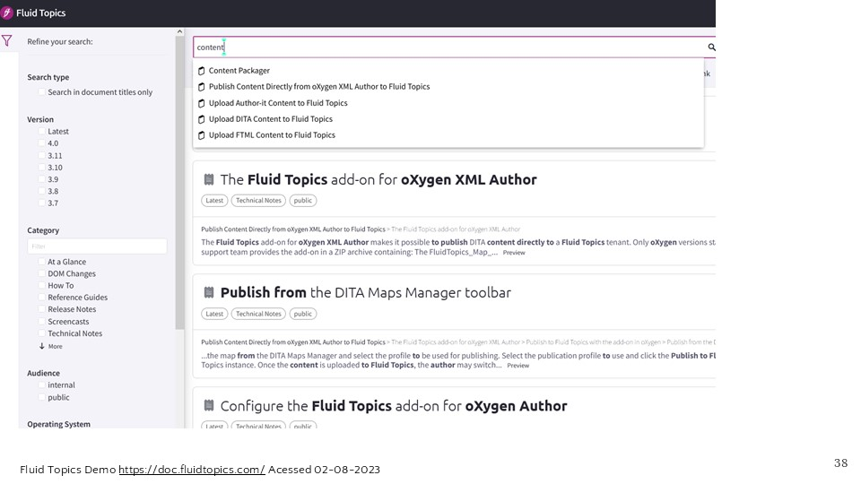
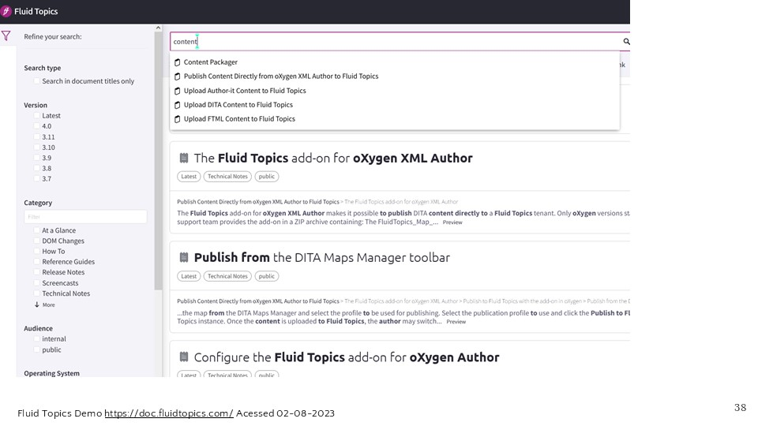

Description
Documentation portals that deliver technical documentation of multiple products to multiple user groups carry the company’s brand and serve business goals. The users’ experience in such portals is therefore an important factor. Findability and context provision typically impact user experience in content-heavy applications. Two content characteristics that can influence these UX-relevant factors are classification and modularization of content. In the past, technical writers handled classification and modularization of technical documentation when preparing technical documentation for delivery. However, in the past decade, processes that typically have been employed to use classification and modularization to ensure findability and context provision in technical documentation were extended by additional technologies or have changed entirely.
Since documentation portals become widespread and integrate more sources and users, this paper investigates the research question: What is the relationship between classification and modularization of content on documentation creation on the one hand and the user experience in a documentation portal on the other hand? To this end, expert interviews with software producers were conducted, and documentary sources reviewed.
The relationship between user experience in documentation portals and content classification and modularization was found to be moderated by use cases. With the relationship clarified, issues that surface in usability tests and user experience research can be addressed in a more targeted way. The relationship can help understand where in a specific process the user experience can be influenced and by whom.